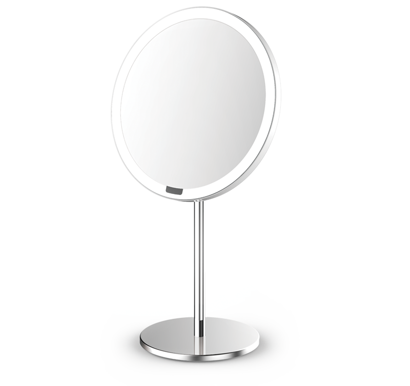
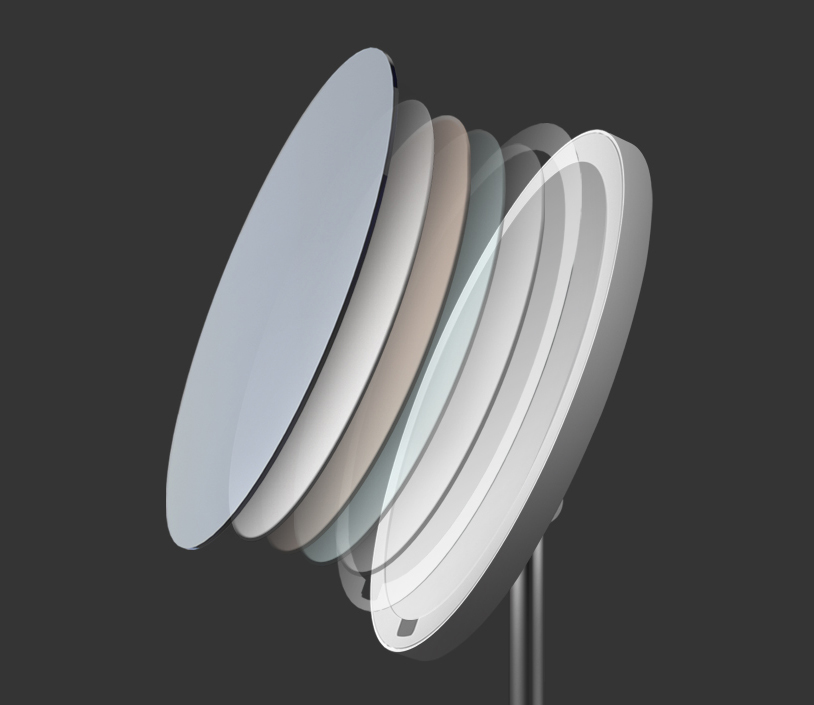
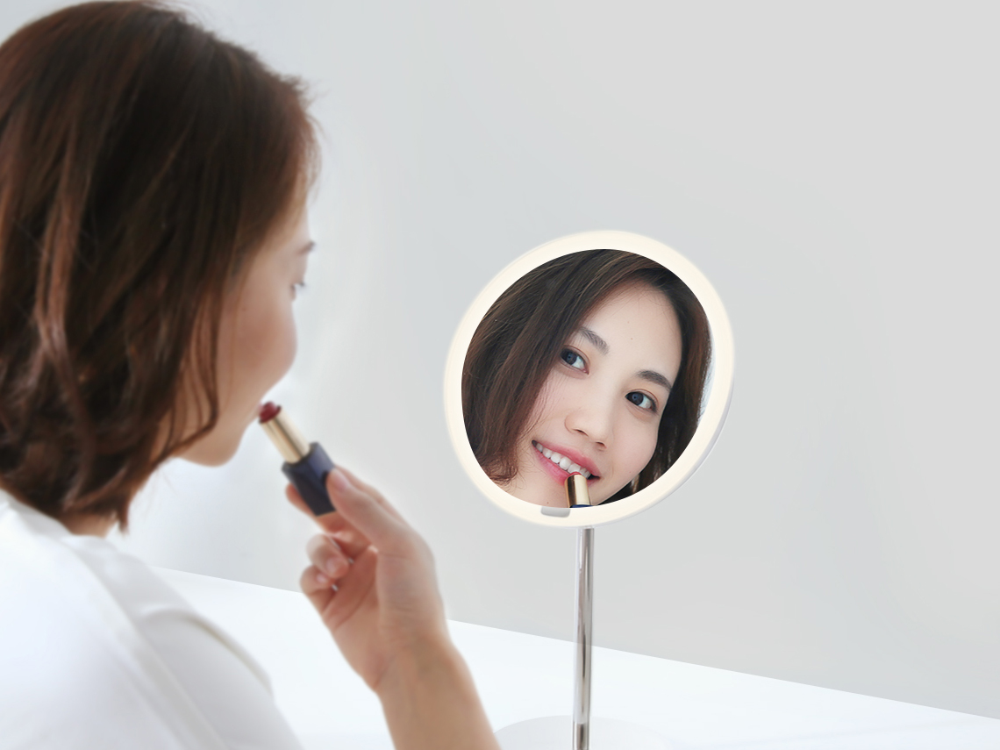
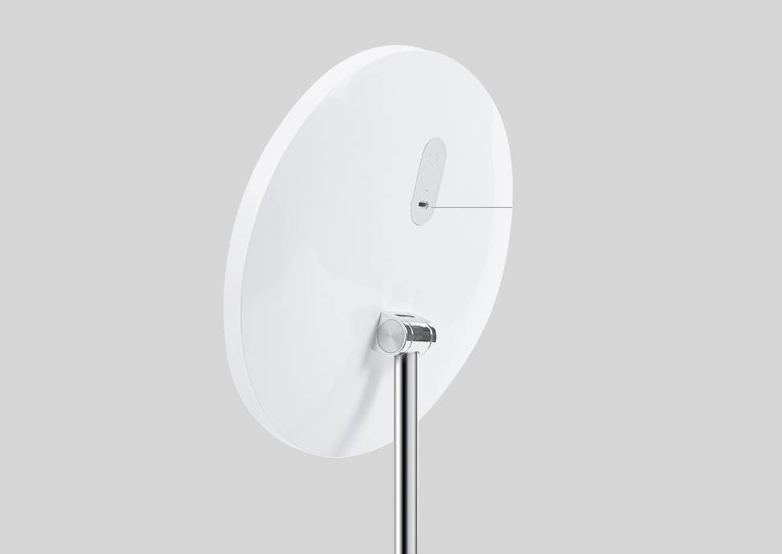

<div class="row mirror">
    <div class="col-xs-12 col-sm-12 col-md-10 col-md-offset-1 col-lg-8 col-lg-offset-2 content">

        <section class="row mirror_content_1">
            <div class="col-xs-12 col-sm-6 col-md-6 col-lg-6">
                <div class="text">
                    <h1>Yeelight Sensor Makeup Mirror</h1>
                    <h2>Зеркало для&nbsp;макияжа с&nbsp;подсветкой</h2>
                    <p>Натуральные цвета | Распознавание лица | Три режима освещения</p>
                </div>
            </div>
            <div class="col-xs-12 col-sm-6 col-md-6 col-lg-6">
                
            </div>
        </section>

        <section class="row mirror_content_2">
            <div class="col-xs-12 col-sm-12 col-md-6 col-md-push-6 col-lg-6 col-lg-push-6" style="padding: 0">
                <div class="text">
                    <h2>Автоматическое распознавание лица</h2>
                    <p>Когда ваши руки полны косметики, включение лампы может быть трудной задачей. Благодаря встроенным
                        инфракрасным датчикам зеркало автоматически включается, когда вы садитесь перед ним. </p>
                    <p>Зеркало автоматически выключается через 10 секунд если перед ним никого нет.</p>
                </div>
            </div>
            <div class="col-xs-12 col-sm-12 col-md-6 col-md-pull-6 col-lg-6 col-lg-pull-6"
                style="padding: 0; font-size: 0;">
                </div>
        </section>


        <section class="row mirror_content_3">
            <div class="col-xs-12 col-sm-12 col-md-6 col-lg-6" style="padding: 0">
                <div class="text">
                    <h2>Зеркало с серебряным покрытием</h2>
                    <p>Зеркала с серебряным покрытием намного более отражающие по всему видимому спектру, чем
                        традиционные зеркала с алюминиевым покрытием. Такое зеркало обеспечивает большую четкость и
                        цвет.</p>
                    <p>Тонкая рамка придает зеркалу современный вид. Кроме того, зеркало имеет мембрану, прикрепленную к
                        поверхности, что предотвращает рассыпание осколков стекла в случае падения зеркала.</p>
                </div>
            </div>
            <div class="col-xs-12 col-sm-12 col-md-6 col-lg-6" style="padding: 0; font-size: 0;"></div>
        </section>

        <section class="row mirror_content_2">
            <div class="col-xs-12 col-sm-12 col-md-6 col-md-push-6 col-lg-6 col-lg-push-6" style="padding: 0">
                <div class="text">
                    <h2>Три световых режима</h2>
                    <p>Режим для ухода за кожей — имитирует естественный солнечный свет и идеально подходит для
                        ежедневного ухода.</p>
                    <p>Режим макияжа — более яркое и прохладное освещение помогает вам видеть мелкие детали при
                        нанесении макияжа. А так же уютный теплый свет для подготовки к свиданию.</p>
                </div>
            </div>
            <div class="col-xs-12 col-sm-12 col-md-6 col-md-pull-6 col-lg-6 col-lg-pull-6"
                style="padding: 0; font-size: 0;">
                </div>
        </section>

        <section class="row mirror_content_4">
            <div class="col-xs-12 col-sm-12 col-md-12 col-lg-12 align-center" style="padding: 0;">
                <div class="text">
                    <h2>Встроенный аккумулятор и зарядка USB</h2>
                    <p>Зеркало имеет встроенный литиевый аккумулятор емкостью 2000 мАч, благодаря ему зеркало может
                        работать до 8 сеансов по 20 минут от одной зарядки. Наслаждайтесь мобильностью и опрятным
                        рабочим столом без проводов.</p>
                </div>
                
            </div>
        </section>

        <section class="row mirror_content_11">
            <div class="col-sm-12 col-md-12 col-lg-12" style="padding: 0">
                
                <table class="table">
                    <thead>
                        <tr>
                            <th colspan="2">Характеристики</th>
                        </tr>
                    </thead>
                    <tbody>
                        <tr>
                            <td>Модель</td>
                            <td>YLG01YL</td>
                        </tr>
                        <tr>
                            <td>Цвет</td>
                            <td>белый</td>
                        </tr>
                        <tr>
                            <td>Размеры</td>
                            <td>365×250 мм, подставка 120 мм</td>
                        </tr>
                        <tr>
                            <td>Вес</td>
                            <td>700 г</td>
                        </tr>
                        <tr>
                            <td>Время работы</td>
                            <td>до 7 дней (при использовании до 20 минут в день)</td>
                        </tr>
                        <tr>
                            <td>Цветовая температура</td>
                            <td>2000-5000К</td>
                        </tr>
                        <tr>
                            <td>Аккумулятор</td>
                            <td>2000 мАч</td>
                        </tr>
                        <tr>
                            <td>Материал</td>
                            <td>Металл</td>
                        </tr>
                    </tbody>
                </table>
            </div>
        </section>
    </div>
</div>